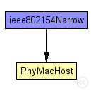
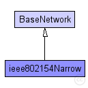

This documentation is released under the Creative Commons license
This documentation is released under the Creative Commons licenseThis example shows how to use MiXiMs implementation of the ieee802154 narrow band protocol.
The network consist of the "WorldUtilityStats" which extends from BaseWorldUtility to collect some global statistics as well as the usual ConnectionManager and a number of host. The hosts contain a special Traffic generation layer which lies directly above the NIC which moreover consist of the "csma"-mac layer module and the PhyLayer. The PhyLayer uses "Decider802154Narrow" as a decider.
There are three "Test"s which try to show the characteristics of the used csma mac layer. For each of these tests exists a "runTestX.sh" script as well as a "TestX.anf" file which execute the configurations necessary to produce the result-files for the according "*.anf" file. So you can take a look at the result of these tests by calling the "runTestX.sh" script and then opening the according "TestX.anf" file.
This configuration produces the usage statistics of the channel for different parameters. Usage statistics means how much of the channels possible maximum capacity is used at which amount of generated traffic.
The results of this tests are visualized by "Test1.anf" and show plots of the generated traffic against the received traffic where both values are normalized against bitrate and simulation time. If everything was fine this should plot 5 lines which converge with different speeds to a channel usage of about 0.8 (depending on the used parameters). You also might see strange outliers in a few of these lines. These seem to be caused by wrong reading of the output scalars. The outliers are not present in the actual output scalars. You can read and plot the output scalars using matlab to verify this.
These test configurations are meant to show the effect of MAC-ACKS on the usage of the channel with increasing distance between the hosts. Test2-C further shows the effect of the hidden station problem on CSMA.
The results can be visualized by "Test2.anf" and show plots of channel usage at different distances. The graph shows three lines plotting the channel usage against the distance between the nodes. You should see that channel usage begins to decrease rapidly around a distance of 170 metres. Whereas the run with MAC-Acks enabled should begin decreasing later than the run without. The third line shows the performance in the hidden station scenario. It should show a huge performance decrease at a distance around 120 metres. This is the point where the two senders are not in range of each other anymore and begin to interfere each others transmissions to the receiver.
This tests is meant to show that CSMA uses exponential backoffs. This is done by increasing the number of hosts in the network exponentially. While the average backoff duration of each hosts should increase exponentially, the average number of backoffs should increase linearly.
The results of this tests are visualized by "Test3.anf". It should show four bar charts displaying the following parameters for each run.
The following diagram shows usage relationships between types. Unresolved types are missing from the diagram. Click here to see the full picture.
The following diagram shows inheritance relationships for this type. Unresolved types are missing from the diagram. Click here to see the full picture.
| Name | Type | Description |
|---|---|---|
| BaseNetwork | network | (no description) |
| Name | Type | Default value | Description |
|---|---|---|---|
| playgroundSizeX | double |
x size of the area the nodes are in (in meters) |
|
| playgroundSizeY | double |
y size of the area the nodes are in (in meters) |
|
| playgroundSizeZ | double |
z size of the area the nodes are in (in meters) |
|
| cmType | string | "org.mixim.base.connectionManager.ConnectionManager" |
connection manager to use |
| wuType | string | "WorldUtilityStats" |
world utility to use |
| numHosts | int |
total number of hosts in the network |
| Name | Value | Description |
|---|---|---|
| isNetwork | ||
| display | bgb=$playgroundSizeX,$playgroundSizeY,white,,;bgp=10,50 |
| Name | Type | Default value | Description |
|---|---|---|---|
| connectionManager.coreDebug | bool |
debug switch for core framework |
|
| connectionManager.sendDirect | bool |
send directly to the node or create separate gates for every connection |
|
| connectionManager.pMax | double |
maximum sending power used for this network [mW] |
|
| connectionManager.sat | double |
minimum signal attenuation threshold [dBm] |
|
| connectionManager.alpha | double |
minimum path loss coefficient |
|
| connectionManager.carrierFrequency | double |
minimum carrier frequency of the channel [Hz] |
|
| world.useTorus | bool |
use the playground as torus? |
|
| node.netwl.stats | bool |
stats switch |
|
| node.netwl.headerLength | int |
length of the network packet header (in bits) |
|
| node.tranl.stats | bool |
stats switch |
|
| node.tranl.headerLength | int |
length of the network packet header (in bits) |
|
| node.sessl.stats | bool |
stats switch |
|
| node.sessl.headerLength | int |
length of the network packet header (in bits) |
|
| node.presl.stats | bool |
stats switch |
|
| node.presl.headerLength | int |
length of the network packet header (in bits) |
|
| node.appl.headerLength | int |
length of the application message header (in bits) |
|
| node.batteryStats.notAffectedByHostState | bool | true | |
| node.batteryStats.debug | bool | false |
write per-activity and per-device statistics to omnetpp.sca (if false, only total energy and lifetime are written) |
| node.batteryStats.detail | bool | true |
subscribe to battery status and record time series data in omnetpp.vec (resolution depends on battery's publishDelta) |
| node.batteryStats.timeSeries | bool | false | |
| node.battery.debug | bool | false | |
| node.battery.nominal | double |
nominal battery capacity |
|
| node.battery.capacity | double |
battery capacity |
|
| node.battery.voltage | double |
nominal voltage |
|
| node.battery.resolution | double |
capacity is updated at least every resolution time |
|
| node.battery.publishDelta | double |
if > 0, capacity is published to the BB each publishTime interval |
|
| node.battery.publishTime | double |
number of modules that will draw energy from the battery |
|
| node.battery.numDevices | int |
// //This example shows how to use MiXiMs implementation of the ieee802154 //narrow band protocol. // //The network consist of the "WorldUtilityStats" which extends from //BaseWorldUtility to collect some global statistics as well as the //usual ConnectionManager and a number of host. //The hosts contain a special Traffic generation layer which lies //directly above the NIC which moreover consist of the "csma"-mac //layer module and the PhyLayer. The PhyLayer uses "Decider802154Narrow" //as a decider. // //There are three "Test"s which try to show the characteristics of the //used csma mac layer. For each of these tests exists a "runTestX.sh" //script as well as a "TestX.anf" file which execute the configurations //necessary to produce the result-files for the according "*.anf" file. //So you can take a look at the result of these tests by calling the //"runTestX.sh" script and then opening the according "TestX.anf" file. // //------------------------------ //Test 1 // //This configuration produces the usage statistics of the channel for //different parameters. Usage statistics means how much of the //channels possible maximum capacity is used at which amount of generated //traffic. // //The results of this tests are visualized by "Test1.anf" and show plots //of the generated traffic against the received traffic where both values //are normalized against bitrate and simulation time. //If everything was fine this should plot 5 lines which converge with //different speeds to a channel usage of about 0.8 (depending on the used //parameters). //You also might see strange outliers in a few of these lines. These seem //to be caused by wrong reading of the output scalars. The outliers are not //present in the actual output scalars. You can read and plot the output //scalars using matlab to verify this. // //------------------------------ //Test 2 // //These test configurations are meant to show the effect of MAC-ACKS on the //usage of the channel with increasing distance between the hosts. //Test2-C further shows the effect of the hidden station problem on CSMA. // //The results can be visualized by "Test2.anf" and show plots of channel //usage at different distances. //The graph shows three lines plotting the channel usage against the distance //between the nodes. You should see that channel usage begins to decrease //rapidly around a distance of 170 metres. Whereas the run with MAC-Acks //enabled should begin decreasing later than the run without. //The third line shows the performance in the hidden station scenario. It //should show a huge performance decrease at a distance around 120 metres. //This is the point where the two senders are not in range of each other //anymore and begin to interfere each others transmissions to the receiver. // //----------------------------- //Test 3 // //This tests is meant to show that CSMA uses exponential backoffs. This is //done by increasing the number of hosts in the network exponentially. //While the average backoff duration of each hosts should increase //exponentially, the average number of backoffs should increase linearly. // //The results of this tests are visualized by "Test3.anf". //It should show four bar charts displaying the following parameters for //each run. //- Chart 1 - average number of transmitted frames per node. // These bars should be between 5 and 10 frames per node. //- Chart 2 - average number of backoffs per node. // These bars should increase almost linear with each run. This results // from the exponential backoffs. //- Chart 3 - average time spent in backoff per node. // These bars should increase exponential with each run. //- Chart 4 - amount of nodes present. // These bars should increase exponential 2, 4, 8, 16, 32, ... // network ieee802154Narrow extends BaseNetwork { parameters: int numHosts; // total number of hosts in the network wuType = "WorldUtilityStats"; @display("bgb=$playgroundSizeX,$playgroundSizeY,white,,;bgp=10,50"); submodules: node[numHosts]: PhyMacHost { parameters: numHosts = numHosts; @display("p=147,100;b=42,42,rect,yellow;i=device/wifilaptop"); } connections allowunconnected: // all connections and gates are to be generated dynamically }
This documentation is released under the Creative Commons license